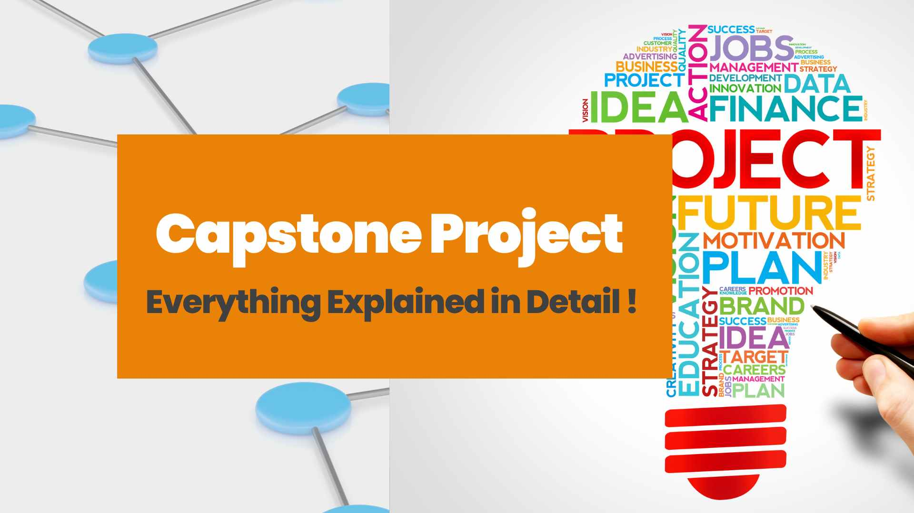
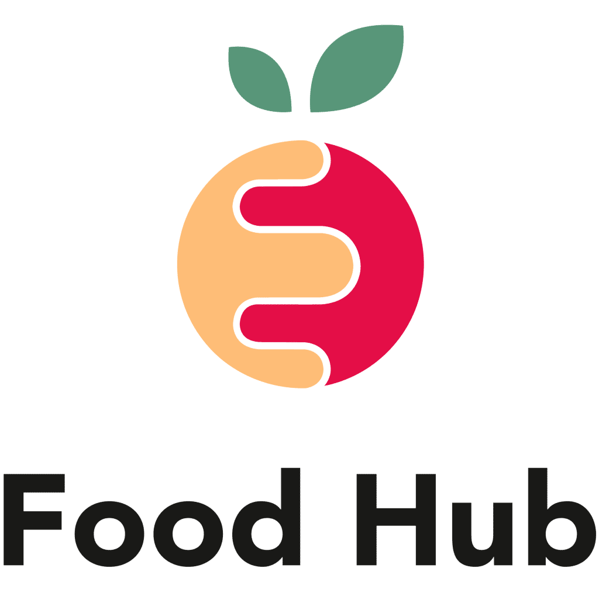
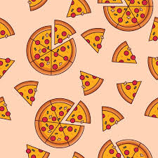
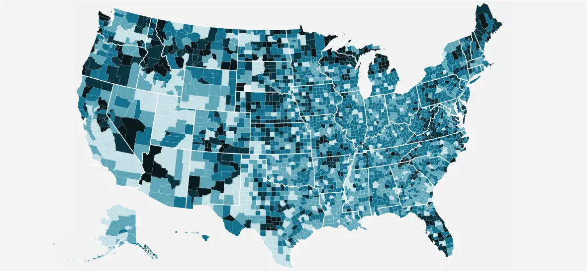
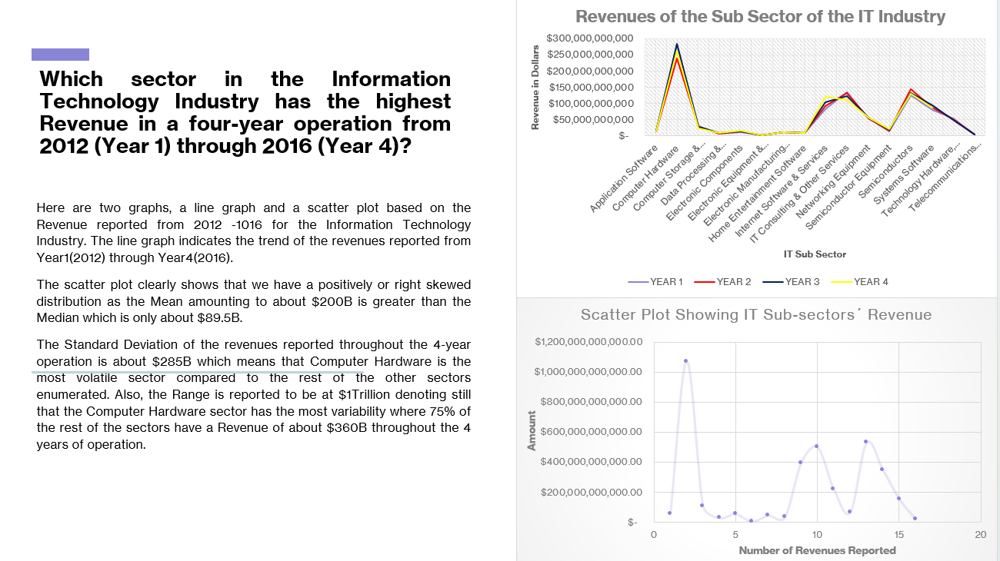

This project holds a special place in my heart as it marks my first venture into the world of Data Analysis, specifically with SQL and Tableau Visualization. I must admit, my knowledge in this field was quite limited at the outset. Creating this project required a significant amount of hard work and dedication, as if I poured my heart and soul into it, all to present this labor of love to my professor.
As a beginner in Data Analysis, I was pleasantly surprised by the results I achieved, at least from my perspective. Although the project has its fair share of imperfections and uncertainties, I can genuinely say that I am proud of what I've accomplished with my very first project.


Throughout this course, I gained hands-on experience in various data analytics tools and techniques. I worked with large datasets, applied data wrangling methods, and created visualizations to communicate insights effectively. While going through this project, I was able to develop the following Key Skills: Data Cleaning and Transformation: Mastered the use of pandas for data preprocessing and cleaning. Statistical Analysis: Applied statistical tests to draw meaningful insights from data. Data Visualization: Used tools like Matplotlib and Seaborn to visualize trends and patterns. Nevertheless, managing large datasets and ensuring data integrity is one major challenge that I needed to overcome. I spent significant time ensuring data was free from missing values and outliers. Finally, by the end of this course, I was able to build a fully functional data analysis pipeline, from data extraction to final insights. My ability to draw conclusions from complex datasets has improved, and I am confident in my ability to apply these skills to real-world projects.
In the midst of the global pandemic, I embarked on a journey to better comprehend the impact of COVID-19 on various regions. The key findings presented here are intended to offer valuable insights into the ongoing crisis.
The analysis is built upon a credible sources, which includes data from respected organizations like the World Health Organization (WHO), the Centers for Disease Control and Prevention (CDC), and local health departments. Additionally, I have harnessed open-source data repositories such as from https://ourworldindata.org/covid-deaths to enhance the accuracy and reliability of our data.
Before diving into the details of this analysis, the vital importance of ensuring the integrity of the data is recognized. I meticulously carried out data cleaning process, which involved removing duplicates, addressing missing values, and harmonizing data formats. The ultimate goal was to provide the most accurate and consistent dataset for this analysis.

Through this analysis, I have crafted a holistic view of the financial performance of a beloved Pizza Joint. The findings shed light on the company's sales, revenue, and losses, with a special focus on the pizza category and sizing aspects. I am excited to share these insights in the hopes that they will empower, the owner, to make informed decisions moving forward and drive continuous improvements for the company. 🍕📈

Within this portfolio, I've assembled a collection of my Tableau projects, encompassing my journey from a beginner, replete with its inherent flaws and ambiguities, to a more advanced and refined stage. This progression has enabled me to refine my grasp of data visualization and enhance my ability to articulate and present complex ideas with greater clarity and precision. I look forward to sharing these projects, and I welcome any feedback or insights you may have.

I am delighted to showcase my inaugural data visualization project in Tableau, representing a significant milestone in my journey from novice to accomplished analyst. This project is a testament to the progression I have made among the various Tableau projects I have had the privilege to create, and I am eager to share this transformative experience with you.
In this project, I have developed a comprehensive analysis of the Top 10 US States, exploring their transportation habits, which encompass driving, carpooling, transit, and even walking. Additionally, I have delved into the various labor sectors and occupations in each of the US States, examining them through the lens of ethnicity. Furthermore, I have included a visualization of the US population density by ethnicity, offering a multi-faceted view of this crucial demographic data.
I believe this project not only demonstrates my evolving skills as a data analyst but also provides valuable insights into these aspects of American life. Your feedback and observations are highly encouraged as I continue to explore and learn from our data-driven journeys together.

I analyzed the New York Stock Exchange data for the Information Technology Industry from 2012 to 2016 using Excel. I created two visualizations to understand the revenue trends over this period: a line graph and a scatter plot.
The line graph showed that revenue grew overall from 2012 to 2016. The scatter plot revealed that the revenue distribution was positively skewed, meaning that a few very high revenue values pulled the average up. The Computer Hardware sector was the most volatile, with the largest standard deviation and range.
Excel was a helpful tool for creating these visualizations and performing the necessary calculations. The analysis provides insights into the revenue trends and distribution characteristics of the Information Technology Industry on the New York Stock Exchange from 2012 to 2016.
{kind=link}